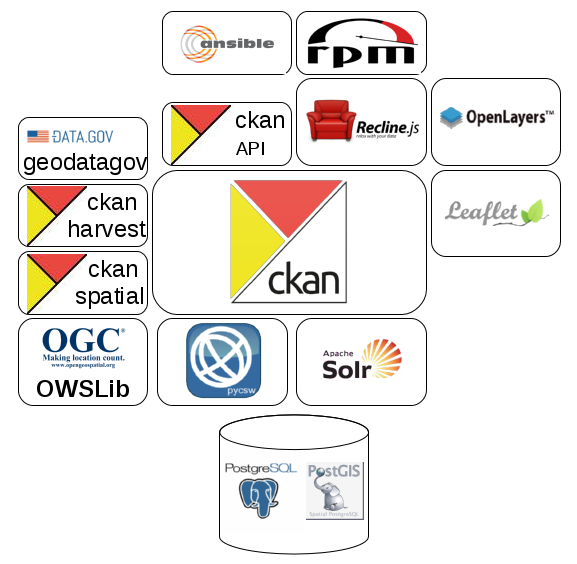
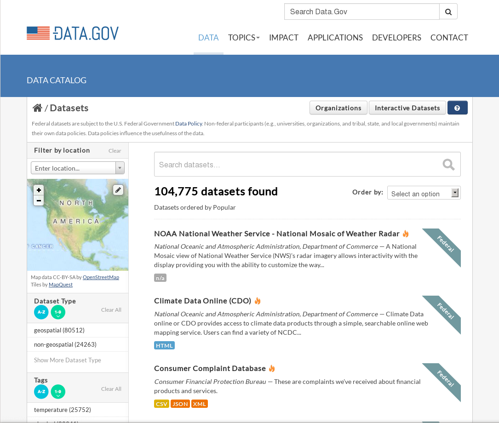
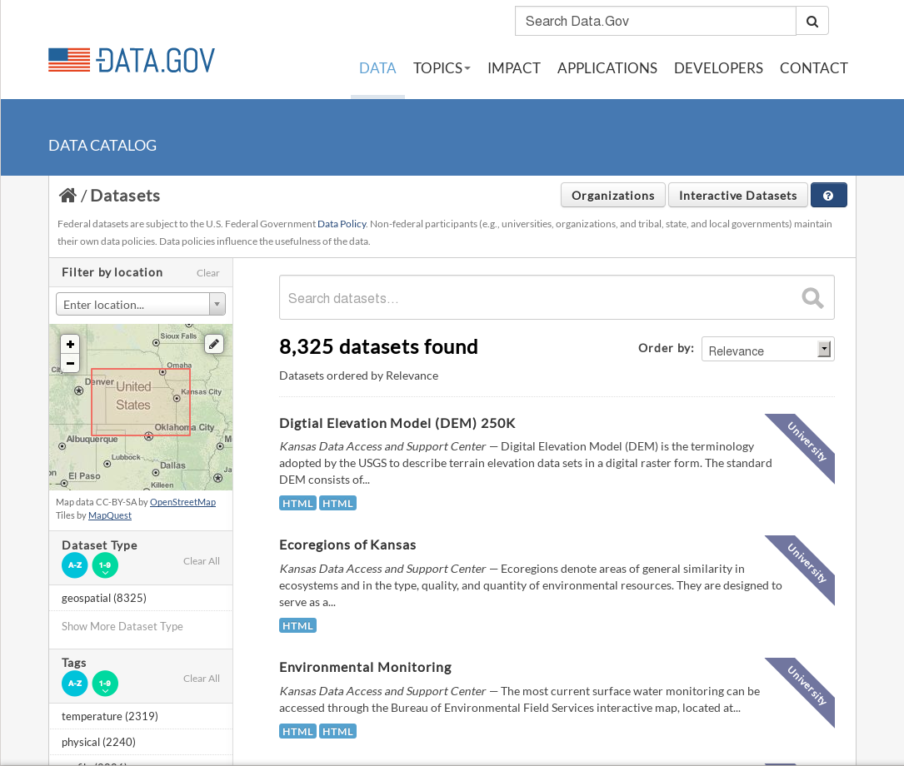
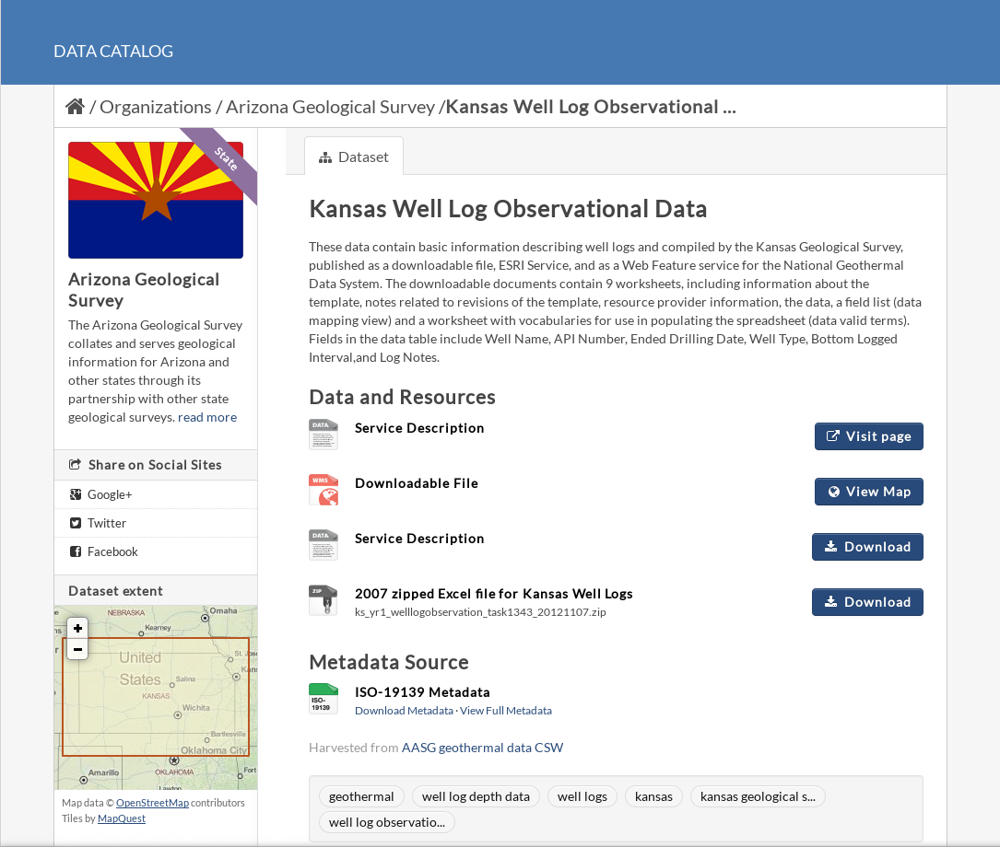
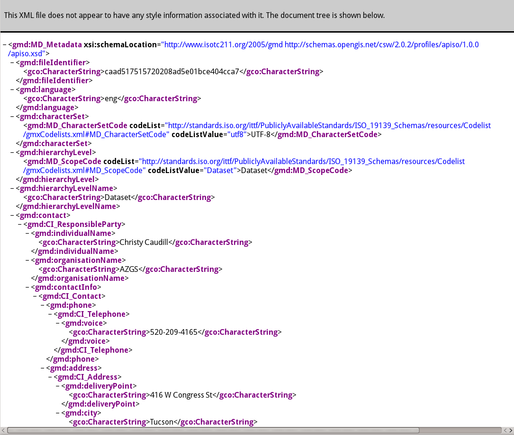
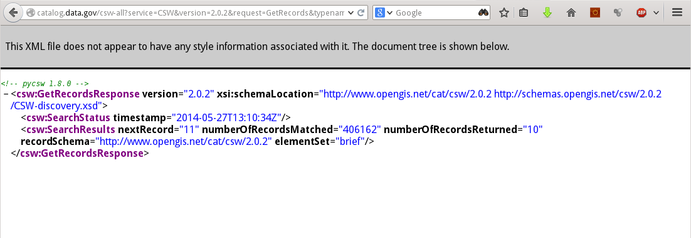

Data.gov/Geoplatform.gov CSW implementation through pycsw and CKAN integration
Presented by Angelos Tzotsos / @tzotsos
Outline
- Introduction
- Architecture/Components
- Features
- Installation/Configuration
- How To Access Data
- Open Data and pycsw Deployments
- Perspectives and Future Developments
Introduction
Data.gov is the home of the US government's open data.
You can find Federal, state and local data, tools, and resources to conduct research, build apps, design data visualizations, and more.
The Data.gov team works at the U.S. General Services Administration, and the whole project is open source.
CKAN
CKAN: An abbreviation for Comprehensive Knowledge Archive Network
Open Source web platform for publishing and sharing data with impressive deployment history:

ckanext-spatial
ckanext-spatial adds geospatial capabilities to CKAN.
|
pycsw
pycsw is a OGC CSW server implementation written in Python.
pycsw is an Open Source project released under the MIT license.
pycsw
pycsw is certified OGC Compliant, and is an OGC Reference Implementation

pycsw is currently under OSGeo Incubation

History
- 2011: CKAN initial investigation of pycsw as default ckanext-spatial CSW component
- 2012: Development started for Data.gov 2.0 as Open Source
- 2013: OKFN implemented the first prototype as a CKAN 2.0 extension
- 2013: GSA takes over the extension development and reaches production state
- 2013: CKAN drops internal CSW implementation in favour of pycsw within CKAN Spatial extension
- late 2013: pycsw implements new features (Full Text Search for PostgreSQL, repositoring filtering, connection pooling)
- early 2014: pycsw 1.8.0 is released and deployed on data.gov
- mid 2014: pycsw implements new features (targeted for 1.10 release)
Goals
- Deploy pycsw via WSGI to http://catalog.data.gov/csw
- Establish synchronization mechanism to populate and keep up to date CKAN harvested records
- Collection level suport
- Performance optimization
- Reproducible workflow
- Documentation
Architecture/Components

CKAN
- CKAN is a powerful data management system that makes data accessible – by providing tools to streamline publishing, sharing, finding and using open data.
- CKAN is aimed at data publishers (national and regional governments, companies and organizations) wanting to make their data open and available.
CKAN Features
- Publish and find datasets
- Store and manage data
- Federated nodes
- Harvesting
- Metadata Editing/Management
- APIs and Extensions
Publish Data

Search and Discovery

Metadata

Geospatial

Visualization

ckanext-spatial
- A spatial field on the default CKAN dataset schema, that uses PostGIS as the backend and allows to perform spatial queries and to display the dataset extent on the frontend
- Harvesters to import geospatial metadata into CKAN from other sources in ISO 19139 and other formats
- Commands to support the CSW standard using pycsw
- Plugins to preview spatial formats such as GeoJSON
Spatial Search

Spatial Search

Spatial Datasets

Spatial Datasets Preview

Spatial Datasets Preview

ISO 19115 Metadata

CSW Interface

New pycsw features
- Repository filtering
- Database connection pooling for WSGI
- PostgreSQL FTS
- Link type detection
- OGC OpenSearch Geo/Time extensions 1.0
pycsw features
- Harvesting support for WMS, WFS, WCS, WPS, WAF, CSW, SOS
- Implements ISO Metadata Application Profile 1.0.0
- Implements FGDC CSDGM Application Profile for CSW 2.0
- Implements INSPIRE Discovery Services 3.0
- Supports ISO, Dublin Core, DIF, FGDC and Atom metadata models
- Standalone of embedded deployment (CGI or WSGI)
- Transactional capabilities (CSW-T)
- Flexible repository configuration (SQLite, PostgreSQL, PostGIS, MySQL)
- Federated catalogue distributed searching
More features...
- Simple configuration
- Extensible plugin architecture (profiles, repositories/backends)
- Seamless integration with Python environments (e.g. GeoNode, Open Data Catalog)
- Includes commandline utility to administer the metadata repository
- Implements the Search/Retrieval via URL (SRU) search protocol
- Implements OpenSearch
- Realtime XML Schema validation
Standards Support
- OGC CSW 2.0.2
- OGC Filter 1.1.0
- OGC OWS Common 1.0.0
- OGC OpenSearch Geo/Time
- OGC GML 3.1.1
- OGC SFSQL 1.2.1
- Dublin Core 1.1
- SOAP 1.2
- ISO 19115 2003
- ISO 19139 2007
- ISO 19119 2005
- NASA DIF 9.7
- FGDC CSDGM 1998
- SRU 1.1
- A9 OpenSearch 1.1
Installation/Configuration
- TODO ansible
- TODO rpm's
How to Access Data
- CSW Howto
- MetaSearch (core QGIS plugin)
- Any CSW client

Data.gov CSW endpoints
Data.gov provides access to its catalog via the CSW standard for both first-order and all metadata for harvested data, services and applications:
- The first-order CSW endpoint provides collection level filtering of all metadata records http://catalog.data.gov/csw
- The all metadata CSW endpoint provides all levels of metadata at varying levels of granularity http://catalog.data.gov/csw-all
Recent Deployments
- NOAA (data.noaa.gov)
- DOI (data.doi.gov)
- PacIOOS (pacioos.org)
See more at the pycsw Live Deployments Map
Perspectives
- It's all about the DB
- Packaging/deps
- PostgreSQL FTS nuts and bolts
- The importance of identifiers!
- The confusion of identifiers!
- Extrapolating metadata
- Overriding values (necessary, but expensive)
- Best fixed at source
- Link type detection
- Deeper integration / binding against CKAN model
- Eliminate need for synchronization
Future Developments
- CSW 3.0
Live Demo
QGIS Metasearch plugin
OWSLib
>>> from owslib.csw import CatalogueServiceWeb
>>> from owslib.fes import PropertyIsLike
>>> csw = CatalogueServiceWeb('http://catalog.data.gov/csw-all')
>>> csw.identification.title
>>> csw.getrecords2()
>>> csw.results
{'matches': 432392, 'nextrecord': 11, 'returned': 10}
>>> q = PropertyIsLike('csw:AnyText', 'oregon thermal springs')
>>> csw.getrecords2(constraints=[q])
>>> for key, value in csw.records.iteritems():
... print value.title
...
Thanks to
- USGS (special thanks to James Bauer)
- FGDC
- GSA/data.gov
- REI
- Special thanks to Tom Kralidis and Adam Hinz
In Memory of Doug Nebert
Doug was a driving force in the geospatial community. His expertise, vision and knowledge in metadata, cataloguing and geospatial interoperability provided sound direction and results to this project.